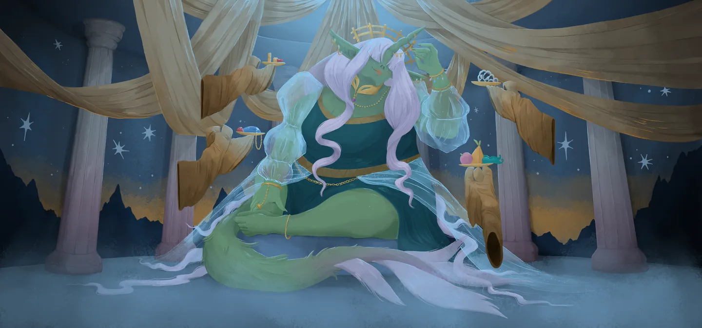
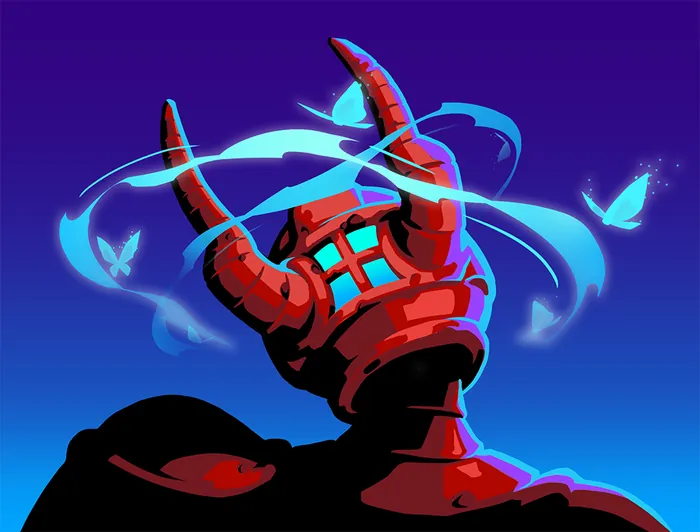

Nonupeipée — Incarnation de la Fortune
Patch de Référence :
v0.111.0 Beta(Dernier patch officiel) Acte d'apparition : Acte 3 Déblocage (Epoch) :NoneThème Visuel / Couleur :#0A494D
🎨 Portraits & Illustrations
| Icône Ancien | Illustration Principale |
|---|---|
 |
🎮 Intégration Visuelle GBA (Butano)
- Palette suggérée pour la GBA : Teinte dominante
#0A494D. À mapper sur une palette 16 couleurs (15 couleurs + transparent) pour le BG de portrait. - Dimensions portrait GBA : 64x64 pixels (mode 4 bpp tilemap) positionné à
(X: 16, Y: 24)sur l'écran 240x160. - Couleur des boutons / encadrements UI :
rgba(0, 26, 41, 0.75)converti en code couleur GBA 15-bit BGR555.
📜 Rôle & Lore dans l'Ascension
🎲 Règles des Slots & Choix
- Nombre total d'options : 10 reliques disponibles.
- Structure des tirages : 1 slot(s).
- Slot #1 : 3 choix parmi 10 reliques présentées.
🏆 Catalogue Complet des Reliques (Classées par Tier)
⭐ Tier S (1 relique)
 Diadème de diamant (
Diadème de diamant (DIAMOND_DIADEM)
- Tier :
S| Rareté :Ancient - Description : Démarrez chaque combat avec 20 d'Armure. Vous ne perdez pas votre Armure au début de votre 2ème tour.
- Implémentation GBA C++ : Économie Run : Incrémente
RunState::gold. Impact direct sur les boutiques du marchand.
⭐ Tier A (3 reliques)
 Fougère délicate (
Fougère délicate (DELICATE_FROND)
- Tier :
A| Rareté :Ancient - Description : Au début de chaque combat, remplissez vos emplacements de potion vides avec des Potions aléatoires.
- Implémentation GBA C++ : Effet Passif : Hook standard dans
RelicManageravec écouteur d'événement (ON_COMBAT_START,ON_TURN_START, etc.).
 Coffre à bijoux (
Coffre à bijoux (JEWELRY_BOX)
- Tier :
A| Rareté :Ancient - Description : Ajoutez 1 Apothéose à votre Deck.
- Implémentation GBA C++ : Mécanique de Deck : Ajoute
Apothéose(APOTHEOSIS) au deck du joueur lors de la sélection. Nécessite l'enregistrement de l'ID de carte dansCardPool.
Cartes Dérivées / Associées :
 Apothéose (
Apothéose (APOTHEOSIS) — Compétence (Coût :2⚡)- Effet de base : Inné. Améliorez TOUTES vos cartes. Épuisement.
- Effet amélioré : Inné. Améliorez TOUTES vos cartes. Épuisement.
- Amélioration :
energy: -1
 Anneau à signet (
Anneau à signet (SIGNET_RING)
- Tier :
A| Rareté :Ancient - Description : Lorsque vous obtenez cette relique, obtenez 888 Pièces d'or.
- Implémentation GBA C++ : Effet Passif : Hook standard dans
RelicManageravec écouteur d'événement (ON_COMBAT_START,ON_TURN_START, etc.).
⭐ Tier B (3 reliques)
 Bois bénis (
Bois bénis (BLESSED_ANTLER)
- Tier :
B| Rareté :Ancient - Description : Gagnez ⚡1⚡ au début de chaque tour. Au début de chaque combat, ajoutez 3 Hébété à votre Pioche.
- Implémentation GBA C++ : Mécanique de Deck : Ajoute
Hébété(DAZED) au deck du joueur lors de la sélection. Nécessite l'enregistrement de l'ID de carte dansCardPool.
Cartes Dérivées / Associées :

Hébété (DAZED) — Statut (Coût :0⚡)- Effet de base : Injouable. Éthéré.
- Effet amélioré : Injouable. Éthéré.
 Écharpe étincelante (
Écharpe étincelante (BRILLIANT_SCARF)
- Tier :
B| Rareté :Ancient - Description : La 5ème carte jouée depuis votre main chaque tour peut être jouée sans coût.
- Implémentation GBA C++ : Effet Passif : Hook standard dans
RelicManageravec écouteur d'événement (ON_COMBAT_START,ON_TURN_START, etc.).
 Bracelet brillant (
Bracelet brillant (BEAUTIFUL_BRACELET)
- Tier :
B| Rareté :Ancient - Description : Choisissez 4 cartes dans votre Deck. Envoûtez-les avec Célérité 2.
- Implémentation GBA C++ : Effet Passif : Hook standard dans
RelicManageravec écouteur d'événement (ON_COMBAT_START,ON_TURN_START, etc.).
⭐ Tier C (2 reliques)
 Paillettes (
Paillettes (GLITTER)
- Tier :
C| Rareté :Ancient - Description : Envoûtez toutes les récompenses de carte avec Glamour.
- Implémentation GBA C++ : Effet Passif : Hook standard dans
RelicManageravec écouteur d'événement (ON_COMBAT_START,ON_TURN_START, etc.).
 Fruits exotiques (
Fruits exotiques (LOOMING_FRUIT)
- Tier :
C| Rareté :Ancient - Description : Augmentez vos PV Max de 31.
- Implémentation GBA C++ : Effet Passif : Hook standard dans
RelicManageravec écouteur d'événement (ON_COMBAT_START,ON_TURN_START, etc.).
⭐ Tier D (1 relique)
 Manteau de fourrure (
Manteau de fourrure (FUR_COAT)
- Tier :
D| Rareté :Ancient - Description : Marquez 8 combats aléatoires sur la Carte. Les ennemis dans ces salles ont 1 PV.
- Implémentation GBA C++ : Effet Passif : Hook standard dans
RelicManageravec écouteur d'événement (ON_COMBAT_START,ON_TURN_START, etc.).
💬 Dialogues & Répliques
Les dialogues s'affichent dans la boîte de dialogue inférieure (240x40 px) sur la GBA avec défilement fluide au bouton A :
🗣️ Première Rencontre (Toutes runs confondues)
- 👑 Ancien :
Cela fait un millénaire que je n'ai pas eu de visite !
Vous m'avez l'air bien terne, venez, trouvons-vous quelque chose d'élégant à porter.
🗣️ Soldat de Fer (Ironclad)
-
👑 Ancien :
Ah, le Soldat de Fer se présente enfin à moi.
Approchez, et je vous octroierai mon pouvoir. -
👑 Ancien :
Soldat de Fer... la faveur dont je vous ai béni n'a-t-elle pas suffi ?
-
👑 Ancien :
Vous êtes de retour, mon champion ? Combien de fois encore ?
N'étiez-vous pourtant pas suffisamment puissant pour anéantir des clans entiers, autrefois ?
🗣️ La Silencieuse (Silent)
-
👑 Ancien :
Une petite larronnesse s'est glissée dans mon domaine ?
Ne croyez pas que je ne vous ai pas vue. Sortez donc ! -
👤 SILENT :
La Silencieuse sort de l'obscurité...
-
👑 Ancien :
Une chasseresse... Qu'est-ce qui vous pousse à revenir dans la Tour ?
Approchez, enfilez donc ma bénédiction. -
👑 Ancien :
Je vous ai préparé des cadeaux, petite assassine, ne soyez pas timide.
-
👑 Ancien :
De toutes ses marionnettes, c'est vous qui m'intriguez le plus.
-
👤 SILENT :
...
-
👑 Ancien :
Qu'est-ce qui a mis fin à votre première vie ? C'est Neow qui vous a trouvée ?
Bien dommage que vous ne parliez pas.
🗣️ Le Défectueux (Defect)
-
👑 Ancien :
Un simple assemblage peut-il réellement être digne de ma bénédiction ?
Avance, Défectueux. De tous les automates, tu seras le plus ravissant. -
👑 Ancien :
Pauvre machine, tout usée. Laisse-moi te requinquer.
-
👑 Ancien :
D'habitude, je n'aime pas les affaires de l'Architecte. Mais j'avoue que tu commences à me plaire.
-
👤 DEFECT :
🗣️ Le Régent (Regent)
-
👤 REGENT :
Je demande une audience avec Nonupeipée !
-
👑 Ancien :
Que de beaux accoutrements de contrées si lointaines !
Laissez approcher vos sbires, et je vous donnerai ma bénédiction. -
👑 Ancien :
Une bénédiction royale pour un visiteur royal.
Serviteurs ! Apportez-nous le thé. -
👑 Ancien :
L'Architecte a perdu la tête ! Si seulement un noble champion pouvait venir à notre secours...
-
👤 REGENT :
N'ayez crainte ! Moi, le Régent, je mettrai fin à cette tyrannie !
Mais d'abord, le thé !
🗣️ La Nécrolieuse (Necrobinder)
-
👤 NECROBINDER :
Je suis venue à bout de vos gardiens. Les rumeurs disent que vous octroyez des bénédictions à ceux qui veulent la mort de l'Architecte.
-
👑 Ancien :
Je suis sensible à vos capacités, et vous offre une partie de mon pouvoir.
La prochaine fois, laissez mes gardiens tranquilles. -
👑 Ancien :
Une magicienne a besoin d'accoutrements de qualité pour combattre. Approchez, Tisse-Mage.
-
👑 Ancien :
L'Architecte sera bien contrarié de voir ce petit à vos côtés.
-
👤 NECROBINDER :
Titos ? C'est lui qui livrera le coup de grâce.
🗣️ Générique (Tout Personnage)
-
👑 Ancien :
La fureur t' / vous attend au sommet. Vêts-toi / Vêtissez-vous de ma puissance et sors-en / sortez-en victorieuse / x.
-
👑 Ancien :
Tu as / Vous avez fait tant de chemin pour venir me voir !
Approche / Approchez donc, et reçois / recevez ma bénédiction.
⬅️ Retour au Sommaire de la Bible | ⚙️ Spécifications Techniques GBA